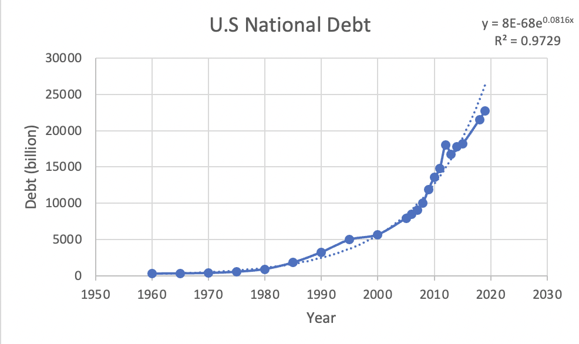

Task 1: Find a recent article that discusses the U.S. national debt. Write a short paragraph (4-5 lines) summarizing the article. Cite your source.
The national debt refers to the amount of money the federal government has borrowed to cover its expenses over time. When spending exceeds revenue in a fiscal year, a budget deficit occurs. To finance the deficit, the government sells marketable securities such as Treasury bonds. The national debt represents the accumulation of this borrowing, along with the associated interest owed to investors. The debt has grown over time due to recurring deficits caused by factors like decreased tax revenue and increased government spending. Recent events such as wars, economic recessions, and the COVID-19 pandemic have contributed to significant spikes in the national debt.
Source: FiscalData
Task 2: Review the table of values below and describe any trend that you observe
Looking at the table of values, we can observe a clear trend of increasing debt over time. The debt values are presented in billions, and we see that the debt has consistently risen from 1960 to 2019
| Year (t) | Debt (billion) |
|---|---|
| 1960 | 286 |
| 1965 | 317 |
| 1970 | 371 |
| 1975 | 533 |
| 1980 | 908 |
| 1985 | 1,823 |
| 1990 | 3,233 |
| 1995 | 4,974 |
| 2000 | 5,674 |
| 2005 | 7,933 |
| 2006 | 8,507 |
| 2007 | 9,008 |
| 2008 | 10,025 |
| 2009 | 11,910 |
| 2010 | 13,562 |
| 2011 | 14,790 |
| 2012 | 18,066 |
| 2013 | 16,738 |
| 2014 | 17,824 |
| 2015 | 18,151 |
| 2018 | 21,516 |
| 2019 | 22,719 |
Task 3: Search for the amount of the national debt for the years 2018 and 2019.Cite your source.
According to statista,the debt in 2018 was 21,516 billion and in 2019 22,719 billion.
Task 4: Use Excel to obtain a scatter plot of the above data set in task 2. [Label the axes properly]
Task 6: Use your EXCEL to obtain a “better” model. Insert the Scatter plot with the exponential curve and equation in it.
Using excel, we can graph the points onto a scatter plot. This helps us vizualize the debt. We can also insert an exponential curve that best fits the data and an equation that fits the data.
Task 5: Describe the trend of the data from the graph. What type of model do you feel fits this data appropriately? Linear, quadratic or exponential. Explain.
the growth pattern of the national debt seems to better align with an exponential model. We can observe an accelerating rate of debt accumulation over time, particularly in the 1980s and 1990s. The data suggests that the debt is growing at an increasing rate, which is characteristic of exponential growth.
Using this model, we can forecast the national debt for the future. For 2020, debt could rise up to 27,185 billion. In 2021, debt could be as high as 29,371
yutyun hyug
From this activity, I have learned the importance of research and seeking help when faced with challenges. I encountered difficulties in understanding how to use Excel and in grasping the concepts of HTML. However, through researching and asking my peers for assistance, I was able to overcome these challenges and gain a better understanding. In completing this assignment, I utilized mathematical skills such as forecasting and analyzing exponential growth. I also applied computer skills such as using Excel to create graphs and working with HTML to present information. The combination of mathematical and computer skills was crucial in completing the task effectively. This activity has helped me to appreciate the practical application of mathematics. By working on the exponential graph of the US national debt and forecasting its future trends, I witnessed firsthand how mathematics can be used to analyze real-world data and make predictions. It has increased my appreciation for the power and relevance of mathematics in various fields. this activity has also improved my perspective on computer skills. It has shown me how computer skills, such as using Excel and HTML, can enhance and facilitate mathematical analysis and presentation of data. It has made me realize the importance of acquiring and developing computer skills to complement mathematical knowledge. This experience has positively changed my feelings towards both mathematics and computer skills. It has shown me their practical value and the impact they can have in solving real-world problems. I now have a greater appreciation for the intersection of mathematics and computer skills and the possibilities they offer in various domains.